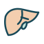

Tiredness
Tiredness can build up. Tell your team how much it affects your usual activities.
New marked weakness, faintness or a severe headache needs an urgent call.
SACTCheck · NCCP 00655 · Durvalumab (Imfinzi) every 28 days
Use the pictures to describe what has changed. A symptom can have several causes. Your oncology team can assess it. You can call even if your symptom is missing from this guide.
Tiredness can build up. Tell your team how much it affects your usual activities.
New marked weakness, faintness or a severe headache needs an urgent call.
Tell the team about a new rash so they can advise on skin care.
Call urgently for spreading rash, blisters, peeling or sores in your mouth or eyes.
New or worsening cough or shortness of breath, even if mild.
Call the oncology team now. Call 112 or 999 for severe breathing difficulty.
More or looser stools than usual, tummy pain, mucus or blood in your stool.
Call the oncology team now. Tell them how many stools you usually have and what has changed.
Unusual weakness, dizziness, a persistent headache or a major change in energy.
Call the oncology team now. If you collapse, call 112 or 999.
Tell the person you speak to that you are receiving immunotherapy. Have your hospital number, last treatment date and medication list to hand.
SACTCheck · NCCP 00655 · Durvalumab (Imfinzi) every 28 days
Immune side effects can begin during treatment or after it has finished. Tell any GP or emergency team about immunotherapy, even months later. Carry the treatment team's immunotherapy alert card as well as your SACTCheck wallet card.

Yellow eyes or skin, dark urine or pain under the right ribs. Blood tests can pick up a problem before you feel it.
Call the oncology team now if you notice these changes.
Very thirsty, passing lots of urine, feeling sick or breathing unusually fast.
Seek urgent assessment. Call 112 or 999 for deep difficult breathing, confusion or collapse.
Much less urine than usual, blood in your urine or new swelling. Changes may first show on a blood test.
Call the oncology team now.
New chest pain, palpitations, unexplained shortness of breath or fainting.
Seek urgent assessment. Call 112 or 999 for severe chest pain, severe breathlessness or collapse.
New marked weakness, double vision, trouble holding your head up, swallowing or breathing.
Call the oncology team now. Call 112 or 999 if breathing or swallowing becomes difficult.
Flushing, itching, dizziness, swelling or breathlessness while the drip is running.
Tell your nurse immediately. After leaving hospital, call 112 or 999 for throat swelling or severe breathing difficulty.
Your 24-hour oncology number: ____________________ Hospital: ____________________